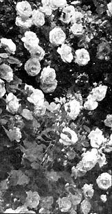

Almost every original homestead in the midwest-sooner or later-had at least one rose bush somewhere near the back door. Sure, roses are pretty to look at and the real old-fashioned variety (unlike many of the current hybrids) are unbelievably fragrant . . . but your grandmother grew them for other reasons too: She made rose water and sachets from their petals and she even cooked with them. That's right . . . COOKED with them.
Here's a few of those traditional recipes plus an unlikely organic gardening tip that can change your saddest rose bushes into the showpiece of the homestead.
* * *
My beautiful New Dawn rose (Inter-State Nurseries, Hamburg, Iowa) spent the first three miserable years of its life just trying to stay alive because-if I had tried to make every mistake in the book-I could not possibly have been more successful. I not only planted the newly arrived rose in the shade of some large hackberry trees but-being pressed for time-I just dug a hole in the ground, stuck the rose in, watered it and hoped for the best.
The plant grew very little and put out only a sickly looking pale pink bloom or two each spring to remind me that it was still there in the tangle of honeysuckle which eventually surrounded it and almost choked the poor thing to death.
Then one year in early spring, having a little more time than usual, I decided to transplant the New Dawn rose to the other side of the fence where it would receive more sunshine. And this time, having learned more about such things, I carefully prepared the ground by digging a hole as big as a bushel basket two feet deep and filling the first foot back with well decomposed cow manure and the last foot with compost mixed with peat moss and sand.
At the time, I had on hand a pint jar of iron cuttings which my husband had saved for me (these can usually be obtained from a machine shop) and--remembering what he had told me about his father intensifying the color of roses with iron filing-I thought I would just give this a try... Accordingly, I thoroughly mixed in the filings with the soil, compost, peat and sand.
Then I dug up my sad looking, weak little rose plant and transferred it to its new location. It's just a "nothing" rose I thought . . . probably will die . . . but what have I got to lose? It certainly wasn't producing anything where it was so I figured the chance was worth taking.
I watered the plant well and continued to do so until it was established and new growth was evident. That new growth came on surprisingly fast but I wasn't really impressed until the first buds began to show in late spring. They were amazingly pink-a deep shell pink-and of exquisite texture. Their fragrance was almost unbelievable.
That was just the beginning of a new life for the climbing rose. In the years that have followed New Dawn has grown so riotously that I've had to cut it back many times. And it has truly lived up to its catalog description, "Blooms constantly from late spring to frost." It does exactly that. As of now it is simply covered with buds and full blown roses; it will bloom only somewhat less during the summer months; and in the fall there will be another tremendous show of blossoms.
Soon now, after the first profusion of blooms are gone, my New Dawn will start to send out long canes. These I will be-! down, secure with a peg or flat stone and cover with soil-leaving the tip of the cane sticking out of the ground.
As young shoots grow from this layered stock I'll continue to add more fine soil, mixed with compost, around the base of the shoots. This I'll keep doing until late summer by which time the base of each lateral cane will be covered with 6 inches or more of soil. In the late fall I'll cut the new stock away from the parent plant and remove it to whatever location I have decided upon.
This is an easy way of producing new plants because layers, in a sense, are cuttings which are rooted before they are removed from the parent plants. They are easier to re-establish than cuttings which are not so rooted. They also have an advantage over grafted plants for there is no danger of suckers growing from the understock and spoiling the named kind; if suckers do appear they are from the named kind and may be left. In fact such suckers may be welcomed as additional plants for you never have too much of a good thing-if it is a fine rose.
I have layer-started many roses including Blaze, scarlet-crimson, Paul's Scarlet, New Dawn and the delightful old-fashioned rose, Seven Sisters, which grows in clusters of tiny pink buds and blossoms. This last rambles all over the place and often layers itself . . . actually rewarding me for being a somewhat untidy gardener and letting it have its own sweet way.
I like this for it is nice to have extras of Seven Sisters to give to welcome friends who stop by to talk "gardening" with me. And people love it for this rose is not easy to find any more. My start was brought to me by a neighbor who is a carpenter. He found it growing in the country by the fence of an old abandoned ranch house which he had been employed to remove. Perhaps it was the pride and joy of a pioneer housewife who brought it from her home in a covered wagon to plant in the newly opened land called "Indian Territory." At least I like to think so.
While I love all my roses I am especially partial to the climbers because of their generous blooms. One year my climbers supplied all the roses for the Mother's Day decorations at the church and schools and churches often ask me for decorative bouquets. Cutting never bothers the climbers; they just send out more shoots and seemingly grow bigger and stronger.
To conserve moisture I keep all my roses heavily mulched with grass clippings and old hay during the summer months. This is probably another reason that they bloom so luxuriantly.
Roses offer another bonus because besides being beautiful: You can eat them and there are few things more delightfully different-or easier to make-than Rose Petal Jam. Since you do not cook the petals you faithfully capture all the flavor, fragrance and color of the fresh roses . . . and serving this jam has added immeasurably to my reputation as a cook!
Here's how: Simply take your freshly opened roses-any color-grasp as many petals as you can, hold them between your finger and thumb and snip the white bases (which are bitter) from all of them at once with a pair of scissors.
Blend one cup of petals in a blender with 3/4 cup water and the juice of one lemon. Blend until smooth, gradually adding 2-1/2 cups of sugar and keeping the blender running until all sugar is dissolved. Reserve.
Now stir one package of pectin (Pen-Jel or Sure-Jel) into 3/4 cup water. Bring to a boil and boil hard for one minute, stirring constantly.
Pour the pectin into the rose-sugar mixture and continue slowly running the blender until all ingredients are thoroughly mixed. Pour into jars, cool, seal and refrigerate. This may also be frozen and is wonderful on muffins or hot biscuits some cold winter day when the sky is overcast and you are longing for a bit of bright June sunshine.
And how about Candied Rose Petals? They're easy too. Simply prepare the petals as you would for jam, snipping off the white bases. Then mix the white of one egg with 1 tablespoon water, dip each petal in this liquid and place on a paper towel, convex side up, to drain. While the petals are still damp but most of the liquid has drained off, sprinkle with granulated sugar on both sides and place on waxed paper to dry for about 12 hours. Placed in a covered container in the refrigerator, Candied Rose Petals will keep for about a month and are just marvelous to serve for a special treat.
Rose Water is another useful recipe which our grandmothers made often by gathering rose petals, covering them with water (which should just cover the petals), bringing them slowly to a boil and letting them simmer for a few minutes. They found this pleasant and fragrant to wash in.
In other countries Rose Water is highly prized and used for other purposes. In India, for example, it's used to flavor soft drinks, sherbets, ice cream, cakes and many other delicacies. Rose Water often appears on the table in Turkey and is used as we would use catsup or a savory sauce. The Arabs call Rose Water "the dew of Paradise" and even use it as a glaze for roasting fowls. This glaze is made by mixing together 3 tablespoons honey, 2 tablespoons melted butter and one tablespoon Rose Water. Paint it on with a pastry brush and use any that remains for basting. I also flavor white cake frosting with Rose Extract which gives the icing both a delicious taste and a delightful fragrance.
Another nearly forgotten use for rose petals of times gone by was to dry the blossoms, place them in little bags and tuck them in among the linens for an added bit of freshness. Here's a good way to do this:
Gather two cups of fragrant, newly-opened rose petals as early in the morning as possible. You will also need a 4-inch by 7-inch piece of colored nylon net and one-fourth teaspoon each of ground cinnamon, allspice and ginger for each sachet.
Spread the rose petals on a large tray lined with paper towels in a protected area where the wind will not blow them about. If you have them, it's nice to dry a few mint leaves for added fragrance and color. Let the petals dry from four days to a week, turning them often. You can tell when they're dry enough for use for they will crackle when picked up.
After they are completely dry put all the petals and leaves into a small bowl, add the three spices and mix well. Next take the nylon net and fold it so it measures 3 by 3-1/2 inches and stitch down the two sides to make a bag. Fill the bag with the petal mixture. Gather the open end of the sachet together-leaving a heading on the bag about three-quarters of an inch deep-and tie tightly with thread. A small bit of ribbon in a matching or contrasting color tied with an attractive bow will hide the thread. These make lovely gifts at small cost and if you grow climbing roses you will always have plenty of rose petals for these sachets.
I am absolutely convinced that growing roses is easy-even in our hot, dry Oklahoma climate-if careful preparation is made and a good feeding and mulching program faithfully followed during the growing season. I'm also convinced that iron filings should be included in that feed and, each fall, I now regularly dig in a few filings around the main stems of my roses. The bits of metal are thoroughly pulverized and mixed a foot or so into the soil, the mulch is replaced and the roses are "bedded down" for the winter.
The time it takes to pursue this simple plan is very small and the rewards-blossoms, rose petal jam, candied rose petals, rose water and sachets-are great.
|
 |
|
|